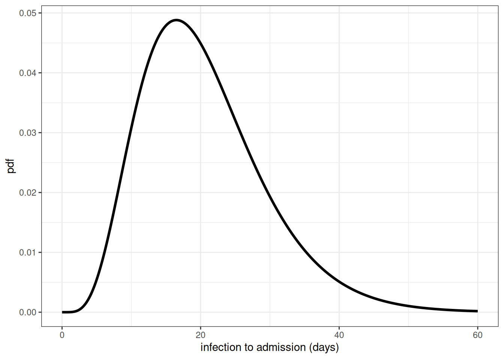
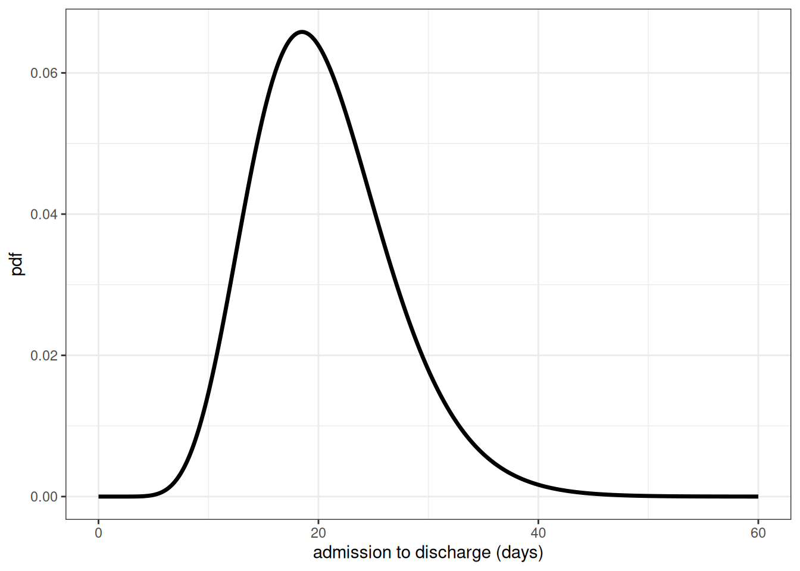
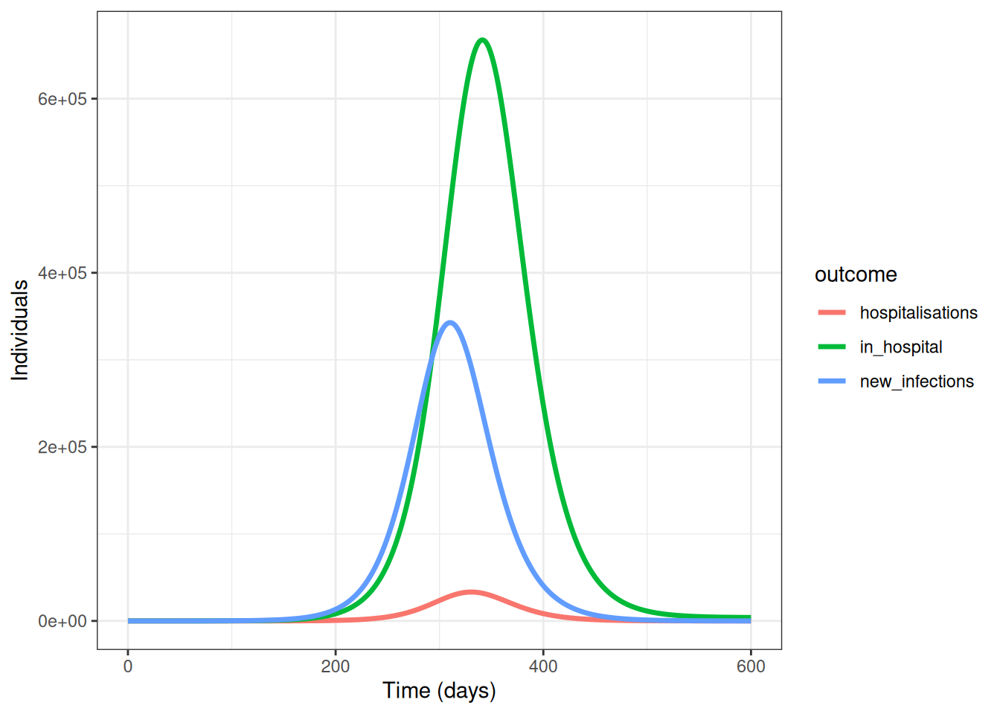

library(epiparameter)
library(epidemics)
library(contactsurveys)
library(socialmixr)
library(wpp2024)
library(tidyverse)Modelar a carga de doença
NotaPerguntas
- Como podemos modelar a carga de doença e a demanda por serviços de saúde?
DicaObjetivos
- Entender quando modelos matemáticos de transmissão podem ser separados de modelos de carga
- Gerar estimativas de carga de doença e demanda por serviços de saúde usando um modelo de carga
ImportantePré-requisitos
- Concluir o tutorial sobre Simular a transmissão
Introdução
Em tutoriais anteriores, usamos modelos matemáticos para gerar trajetórias de infecções, mas também podemos ter interesse em medidas de carga de doença. Essas medidas podem incluir:
- Desfechos de saúde na população (por exemplo, infecções leves vs. graves)
- Impactos no sistema de saúde (por exemplo, internações, admissões em UTI)
- Impactos econômicos (por exemplo, perda de produtividade, custos com saúde)
Em modelos matemáticos, podemos acompanhar a carga de doença de diferentes maneiras:
- Abordagem integrada: incluir compartimentos de carga diretamente no modelo de transmissão (por exemplo, compartimentos hospitalares em modelos de EDO)
- Abordagem separada: primeiro simular a transmissão e, depois, usar os resultados para estimar a carga
A escolha entre essas abordagens depende de a carga afetar ou não a transmissão. Por exemplo:
- Para o ebola, as internações são importantes para a transmissão devido ao alto risco em ambientes de assistência à saúde
- Para muitas infecções respiratórias, a doença grave ocorre tipicamente após o período infeccioso, de modo que a carga pode ser modelada separadamente
Neste tutorial, vamos nos concentrar na abordagem separada, na qual primeiro executamos um modelo epidêmico para simular infecções e, em seguida, usamos esses valores para estimar a carga de doença como uma análise subsequente. Usaremos o {epidemics} para simular as trajetórias da doença, o {socialmixr} para dados de contato social e o {tidyverse} para manipulação de dados e gráficos.
ImportantePara o instrutor
Notas em linha para o instrutor podem ajudar a informar os instrutores sobre desafios de tempo associados às aulas. Elas aparecem na “Visão do Instrutor”.
Um modelo de carga
Vamos estender o exemplo de influenza do tutorial Simular a transmissão usando o objeto output para calcular internações ao longo do tempo. Nossa abordagem tem dois componentes principais:
- Modelo de transmissão: um modelo SEIR que gera novas infecções ao longo do tempo
- Modelo de carga: converte novas infecções em internações levando em conta os atrasos entre a infecção e a internação
Para converter infecções em internações, precisamos considerar:
- A probabilidade de uma infecção levar à internação (razão infecção-internação, IHR)
- O atraso de tempo da infecção até a admissão hospitalar
- O tempo de permanência no hospital antes da alta
NotaNo Brasil: as datas que o SIVEP-Gripe registra
Na ficha de SRAG hospitalizado do SIVEP-Gripe existem, entre outros, os campos DT_SIN_PRI (primeiros sintomas), DT_INTERNA (internação), DT_ENTUTI e DT_SAIDUTI (entrada e saída da UTI) e DT_EVOLUCA (evolução do caso). Os nomes e a descrição de cada campo estão no dicionário de dados da ficha de SRAG hospitalizado.
Com essas datas, os atrasos que o episódio modela por distribuição Gamma podem ser estimados diretamente dos dados da sua unidade.
Usaremos o {epiparameter} para definir essas distribuições de atraso. A distribuição Gama é comumente usada para esses atrasos porque:
- É flexível e pode modelar diferentes formas
- É limitada em zero (atrasos negativos não fazem sentido)
- É respaldada por dados empíricos para muitas doenças infecciosas
ImportantePara o instrutor
# baixar e carregar dados de contato e população do Zenodo
survey_files <- contactsurveys::download_survey(
survey = "https://doi.org/10.5281/zenodo.3874557",
verbose = FALSE
)
survey_load <- socialmixr::load_survey(files = survey_files)
data(popAge1dt, package = "wpp2024")
uk_pop <- popAge1dt %>%
dplyr::filter(name == "United Kingdom", year == 2020) %>%
dplyr::select(lower.age.limit = age, population = pop) %>%
dplyr::mutate(population = population * 1000)
contacts_byage <- socialmixr::contact_matrix(
survey = survey_load,
countries = "United Kingdom",
age_limits = c(0, 20, 40),
symmetric = TRUE,
survey_pop = uk_pop
)
# preparar a matriz de contato
contacts_byage_matrix <- contacts_byage$matrix
# preparar o vetor demográfico
demography_vector <- contacts_byage$demography$population
names(demography_vector) <- rownames(contacts_byage_matrix)
# condições iniciais: um a cada 1 milhão está infectado
initial_i <- 1e-6
initial_conditions_inf <- c(
S = 1 - initial_i, E = 0, I = initial_i, R = 0, V = 0
)
initial_conditions_free <- c(
S = 1, E = 0, I = 0, R = 0, V = 0
)
# construir para todas as faixas etárias
initial_conditions <- rbind(
initial_conditions_inf,
initial_conditions_free,
initial_conditions_free
)
rownames(initial_conditions) <- rownames(contacts_byage_matrix)
# preparar a população a ser modelada como afetada pela epidemia
uk_population <- epidemics::population(
name = "UK",
contact_matrix = contacts_byage_matrix,
demography_vector = demography_vector,
initial_conditions = initial_conditions
)
# períodos de tempo
preinfectious_period <- 3.0
infectious_period <- 7.0
basic_reproduction <- 1.46
# taxas
infectiousness_rate <- 1.0 / preinfectious_period
recovery_rate <- 1.0 / infectious_period
transmission_rate <- basic_reproduction / infectious_period
# rodar um modelo epidêmico usando `epidemic()`
output <- epidemics::model_default(
population = uk_population,
transmission_rate = transmission_rate,
infectiousness_rate = infectiousness_rate,
recovery_rate = recovery_rate,
time_end = 600, increment = 1.0
)new_cases <- new_infections(output, by_group = FALSE)
head(new_cases)Chave: <time>
time new_infections
<num> <num>
1: 0 0.000000
2: 1 3.745722
3: 2 3.463059
4: 3 3.361054
5: 4 3.368247
6: 5 3.442438Para converter as novas infecções em internações, precisamos de distribuições de parâmetros para descrever os seguintes processos:
o tempo da infecção até a admissão no hospital,
o tempo da admissão até a alta do hospital.
Usaremos a função epiparameter() do pacote {epiparameter} para definir e armazenar distribuições de parâmetros para esses processos.
# definir parâmetros de atraso
infection_to_admission <- epiparameter(
disease = "COVID-19",
epi_name = "infection to admission",
prob_distribution = create_prob_distribution(
prob_distribution = "gamma",
prob_distribution_params = c(shape = 5, scale = 4),
discretise = TRUE
)
)
# Os parâmetros shape e scale foram escolhidos com base em dados de estudos da COVID-19
# que mostram um tempo mediano da infecção até a internação de cerca de 10 dias
# com distribuição assimétrica à direita refletindo a variabilidade na progressão da doençaPara visualizar essa distribuição, podemos criar um gráfico de densidade:
x_range <- seq(0, 60, by = 0.1)
density_df <- data.frame(days = x_range,
density_admission = density(infection_to_admission,
x_range))
ggplot(data = density_df, aes(x = days, y = density_admission)) +
geom_line(linewidth = 1.2) +
theme_bw() +
labs(
x = "infection to admission (days)",
y = "pdf"
)
DicaDesafio
Definir a distribuição da admissão até a alta
Usando a função epiparameter(), defina a distribuição da admissão até a alta como uma distribuição Gama com shape = 10 e scale = 2 e faça o gráfico de densidade dessa distribuição.
NotaSolução
admission_to_discharge <- epiparameter(
disease = "COVID-19",
epi_name = "admission to discharge",
prob_distribution = create_prob_distribution(
prob_distribution = "gamma",
prob_distribution_params = c(shape = 10, scale = 2),
discretise = TRUE
)
)
x_range <- seq(0, 60, by = 0.1)
density_df <- data.frame(days = x_range,
density_discharge = density(admission_to_discharge,
x_range))
ggplot(data = density_df, aes(x = days, y = density_discharge)) +
geom_line(linewidth = 1.2) +
theme_bw() +
labs(
x = "admission to discharge (days)",
y = "pdf"
)
Para converter as novas infecções no número de pessoas hospitalizadas ao longo do tempo, faremos o seguinte:
- Calcular o número esperado de novas infecções que serão internadas usando a razão infecção-internação (IHR)
- Calcular o número estimado de novas internações em cada ponto no tempo usando a distribuição de infecção até a admissão
- Calcular o número estimado de altas em cada ponto no tempo usando a distribuição de admissão até a alta
- Calcular o número de pessoas no hospital em cada ponto no tempo como a diferença entre a soma acumulada de admissões hospitalares e a soma acumulada de altas até aquele momento.
1. Calcular o número esperado de novas internações usando a razão infecção-internação (IHR)
ihr <- 0.1 # razão infecção-internação
# Este valor baseia-se em estimativas dos dados iniciais da COVID-19
# e representa a proporção de infecções que requerem internação
# calcular o número esperado com convolução:
hosp <- new_cases$new_infections * ihr2. Calcular o número estimado de novas internações usando a distribuição de infecção até a admissão
Para estimar o número de novas internações, usamos um método chamado convolução.
NotaO que é convolução?
Se quisermos saber quantas pessoas foram admitidas no hospital no dia \(t\), precisamos somar o número de pessoas admitidas no dia \(t\) mas infectadas no dia \(t-1\), dia \(t-2\), dia \(t-3\), etc. Portanto, precisamos somar sobre a distribuição dos atrasos da infecção até a admissão. Se \(f_j\) for a probabilidade de um indivíduo infectado que virá a ser internado ser admitido no hospital \(j\) dias depois, e \(I_{t-j}\) for o número de indivíduos infectados no dia \(t-j\), então o total de admissões no dia \(t\) é igual a \(\sum_j I_{t-j} f_j\). Esse tipo de cálculo contínuo e cumulativo é conhecido como convolução (consulte este artigo da Wolfram para detalhes matemáticos). Existem diferentes métodos para calcular convoluções, mas usaremos a função nativa do R convolve() para realizar o somatório de forma eficiente a partir do número de infecções e da distribuição de atraso.
A função convolve() requer como entradas dois vetores que serão convoluídos e o argumento type. Aqui especificaremos type = "open", o que preenche os vetores com zeros para garantir que tenham o mesmo comprimento.
As entradas a serem convoluídas são o número esperado de infecções que resultarão em internação (hosp) e os valores de densidade da distribuição dos tempos da infecção até a admissão. Calcularemos a densidade para o valor mínimo possível (0 dias) até a cauda da distribuição (aqui definida como o quantil 99,9, isto é, é muito improvável que algum caso seja internado após um atraso tão longo).
A convolução requer que uma das entradas seja invertida; em nosso caso, inverteremos a distribuição de densidade dos tempos da infecção até a admissão. Isso ocorre porque, se pessoas infectadas mais no passado são admitidas hoje, significa que elas tiveram um atraso maior da infecção até a admissão do que alguém infectado mais recentemente. Com efeito, o atraso da infecção até a admissão nos diz o quanto temos que ‘rebobinar’ o tempo para encontrar infecções anteriormente novas que agora estão se manifestando como admissões hospitalares.
# definir a cauda da distribuição de atraso
tail_value_admission <- quantile(infection_to_admission, 0.999)
hospitalisations <- convolve(hosp,
rev(density(infection_to_admission,
0:tail_value_admission)),
type = "open")[seq_along(hosp)]3. Calcular o número estimado de altas
Usando a mesma abordagem descrita acima, convoluímos as internações com a distribuição dos tempos da admissão até a alta para obter o número estimado de novas altas.
tail_value_discharge <- quantile(admission_to_discharge, 0.999)
discharges <- convolve(hospitalisations, rev(density(admission_to_discharge,
0:tail_value_discharge)),
type = "open")[seq_along(hospitalisations)]4. Calcular o número de internados como a diferença entre a soma acumulada de internações e a soma acumulada de altas
Podemos usar a função do R cumsum() para calcular o número acumulado de internações e altas. A diferença entre essas duas quantidades nos dá o número atual de pessoas internadas no hospital em cada ponto no tempo.
# calcular o número atual de pessoas no hospital
in_hospital <- cumsum(hospitalisations) - cumsum(discharges)Criamos um data frame para representar graficamente nossos desfechos usando pivot_longer():
# criar data frame
hosp_df <- cbind(new_cases, in_hospital = in_hospital,
hospitalisations = hospitalisations)
# pivotar para formato longo para o gráfico
hosp_df_long <- pivot_longer(hosp_df, cols = new_infections:hospitalisations,
names_to = "outcome", values_to = "value")
ggplot(data = hosp_df_long) +
geom_line(
aes(
x = time,
y = value,
colour = outcome
),
linewidth = 1.2
) +
theme_bw() +
labs(
x = "Time (days)",
y = "Individuals"
)
Resumo
Neste tutorial, aprendemos a estimar internações com base nas novas infecções diárias de um modelo de transmissão. Essa abordagem pode ser estendida para outras medidas de carga de doença, como:
- Admissões em UTI
- Óbitos
- Anos de Vida Perdidos Ajustados por Incapacidade (DALYs)
- Custos em saúde
NotaNo Brasil: projetar leitos só faz sentido com a oferta ao lado
Uma projeção de demanda por internações e UTI só vira decisão quando comparada com a oferta existente. A oferta instalada está cadastrada no CNES (CNES); a disponibilidade do dia é gerida pelas centrais de regulação. Sem esse segundo lado da conta, o número do modelo não ajuda a gestão.
Essas estimativas de carga são valiosas para:
- Planejamento do sistema de saúde
- Análises de economia da saúde
- Tomada de decisões de políticas públicas
Como continuidade, você pode se interessar por este guia prático, que mostra como estimar os eventos de infecção originais a partir de internações ou óbitos notificados ao longo do tempo.
NotaPontos-chave
- Modelos de transmissão devem incluir a carga de doença quando ela afeta a transmissão subsequente
- As saídas dos modelos de transmissão podem ser usadas como entradas para modelos de carga
- A distribuição Gama é comumente usada para modelar atrasos na progressão da doença
- A convolução é uma ferramenta valiosa para estimar a carga de doença a partir das saídas de modelos de transmissão